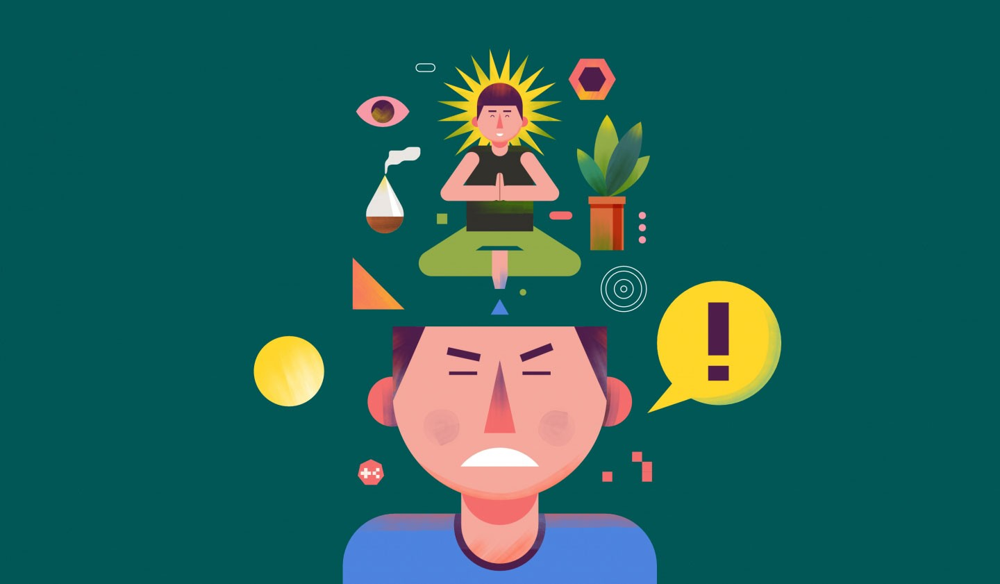

Apa Itu Stress dan Cara Mengatasinya
Apa Itu Stress?
Stres adalah gangguan mental yang dihadapi seseorang akibat adanya tekanan. Tekanan ini muncul dari kegagalan individu dalam memenuhi kebutuhan atau keinginannya. Tekanan ini juga bisa berasal dari dalam diri, atau dari luar.
Stres bisa bersifat positif dan bisa negatif. Para peneliti berpendapat bahwa stres tantangan, atau stres yang menyertai tantangan di lingkungan kerja, beroperasi sangat berbeda dari stres hambatan, atau stres yang menghalangi dalam mencapai tujuan. Meskipun riset mengenai stres tantangan dan stres hambatan baru tahap permulaan, bukti awal menunjukan bahwa stres tantangan memiliki banyak implikasi yang lebih sedikit negatifnya dibanding stres hambatan
Faktor-faktor Penyebab Stress
Berikut adalah 3 faktor utama yang dapat menyebabkan stress, yaitu:
- Faktor Lingkungan
- Faktor organisasi
- Faktor Pribadi
- Gejala Emosi
- Gejala Fisik
- Gejala Kognitif
- Gejala Perilaku
- Lakukanlah kegiatan yang anda sukai/hobi
- Cobalah untuk berolahraga
- Mendengarkan Musik Bernada Lembut
- Meditasi
Selain memengaruhi desain struktur sebuah organisasi, ketidakpastian lingkungan juga memengaruhi tingkat stres para karyawan dan organisasi. Perubahan dalam siklus bisnis menciptakan ketidakpastian ekonomi, misalnya, ketika kelangsungan pekerjaan terancam maka seseorang mulai khawatir ekonomi akan memburuk.
Banyak faktor di dalam organisasi yang dapat menyebabkan stres. Tekanan untuk menghindari kesalahaan atau menyelesaikan tugas dalam waktu yang mepet, beban kerja yang berlebihan, atasan yang selalu menuntut dan tidak peka, dan rekan kerja yang tidak menyenangkan adalah beberapa di antaranya. Hal ini dapat mengelompokkan faktor-faktor ini menjadi tuntutan tugas, peran, dan antarpribadi.
Faktor-faktor pribadi terdiri dari masalah keluarga, masalah ekonomi pribadi, serta kepribadian dan karakter yang melekat dalam diri seseorang. Survei nasional secara konsisten menunjukkan bahwa orang sangat mementingkan hubungan keluarga dan pribadi. berbagai kesulitan dalam hidup perkawinan, retaknya hubungan, dan kesulitan masalah disiplin dengan anak-anak adalah beberapa contoh masalah hubungan yang menciptakan stres.
Gejala Stress
Gejala yang muncul saat seseorang mengalami stres dapat berbeda-beda, tergantung penyebab dan cara menyikapinya. Gejala atau tanda stres dapat dibedakan menjadi:
Gejala emosi, misalnya mudah gusar, frustasi, suasana hati yang mudah berubah atau moody, sulit untuk menenangkan pikiran, rendah diri, serta merasa kesepian, tidak berguna, bingung, dan hilang kendali, hingga tampak bingung, menghindari orang lain, dan depresi.
Gejala fisik, seperti lemas, pusing, migrain, sakit kepala tegang, gangguan pencernaan (mual dan diare atau sembelit), nyeri otot, jantung berdebar, sering batuk pilek, gangguan tidur, hasrat seksual menurun, tubuh gemetar, telinga berdengung, kaki tangan terasa dingin dan berkeringat, atau mulut kering dan sulit menelan. Stres pada wanita juga dapat menimbulkan keluhan atau gangguan menstruasi.
Gejala kognitif, contohnya sering lupa, sulit memusatkan perhatian, pesimis, memiliki pandangan yang negatif, dan membuat keputusan yang tidak baik.
Gejala perilaku, misalnya tidak mau makan, menghindari tanggung jawab, serta menunjukkan sikap gugup seperti menggigit kuku atau berjalan bolak-balik, merokok, hingga mengonsumsi alkohol secara berlebihan.
Cara Mengatasinya
Berikut ini adalah beberapa rekomendasi untuk mengatasi/menghilangkan stress pada diri kita.

Cobalah untuk melakukan kegiatan positif yang dapat membuat Anda lupa waktu dan membuat anda bahagia. Anda juga bisa melakukan hobi yang anda punya seperti membaca buku, bermain game, menonton TV, memasak ,dan lainnya.
Saat Anda mengalami stres, janganlah mengurung diri di tempat sepi. Tetaplah bergerak dan berolahraga ringan, seperti lari, bersepeda, atau berjalan kaki. Melakukan latihan peregangan seperti yoga juga dapat mengurangi ketegangan pada otot, dan sekaligus meringankan stres. Pada saat Anda bergerak atau berolahraga, tubuh akan mengeluarkan zat kimia yang membuat Anda merasa lebih baik.
Mendengarkan musik bernada lembut adalah salah satu cara menghilangkan stres yang sangat membantu. Hal ini dikarenakan musik bernada lembut dapat menurunkan laju detak jantung, meredakan rasa cemas, dan menurunkan tekanan darah. Selain itu, mendengarkan musik yang tenang dan lembut membuat hormon kortisol dan tekanan darah menurun.
Ketika dilanda stres dan ada begitu banyak masalah dalam pikiran Anda, cobalah untuk melakukan meditasi. Ini dapat membuat Anda akan menjadi lebih fokus pada hal-hal yang sedang terjadi saat itu atau tujuan awal. Salah satu teknik meditasi yang dapat dilakukan yaitu meditasi mindful. Meditasi ini mensyaratkan Anda fokus pada setiap hal yang Anda rasakan saat ini, termasuk gerakan pernapasan Anda. Lalu ada meditasi mantera, yaitu memusatkan atau mengosongkan pikiran dengan cara mengulang kata secara berulang-ulang.
Nah tadi itu mengenai stress teman-teman. Apakah kalian sedang stress sekarang? kalau iya coba deh lakuin beberapa hal dari rekomendasi diatas, Dijamin pasti kalian akan merasa jauh lebih baik deh :)